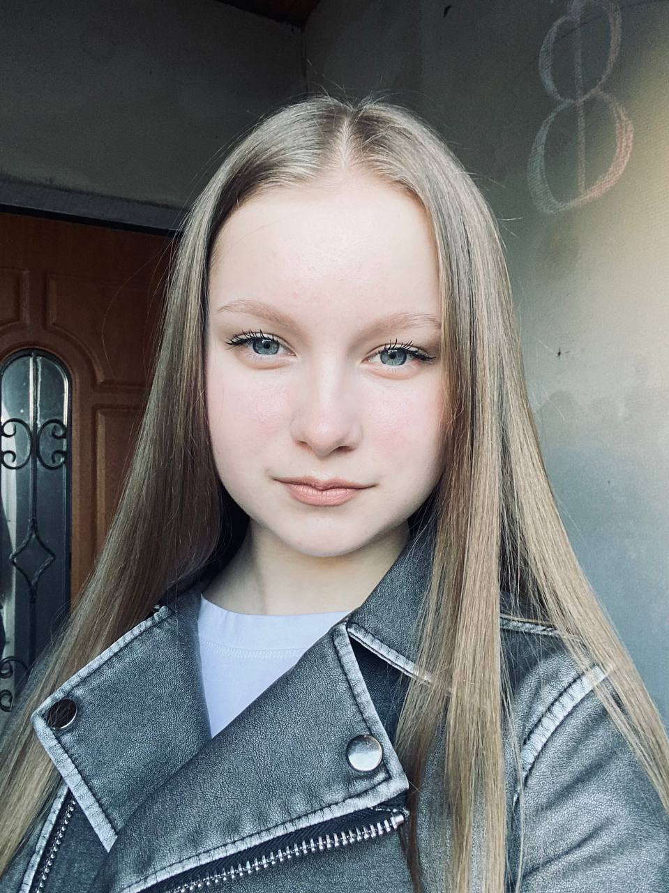

Дипломатія та зовнішня політика
Міждержавний діалог, політичні рішення й міжнародні відносини.
АКАДЕМІЧНИЙ ПРОФІЛЬ · МІЖНАРОДНІ ВІДНОСИНИ
Студентка міжнародних відносин, зацікавлена у глобальних економічних процесах, дипломатії та стратегічному розвитку держав.

01 — ПРО МЕНЕ
Мій академічний інтерес зосереджений на міжнародних відносинах, дипломатії та економічних процесах, що формують сучасний світ. Я прагну розвивати аналітичне мислення, дослідницькі навички й краще розуміти взаємодію держав у глобальному середовищі.
02 — НАПРЯМИ ІНТЕРЕСУ
Міждержавний діалог, політичні рішення й міжнародні відносини.
Торгівля, глобальні ринки та економічна взаємозалежність.
Стійкість держав, ризики та здатність реагувати на виклики.
Глобальні процеси та міжнародна співпраця.
FEATURED STUDY · 2026
Оцінювання дев’яти взаємопов’язаних складових економічної безпеки за 2014–2024 роки.
Переглянути дослідження ↗03 — CONTACT
Відкрита до академічного спілкування та обміну ідеями.